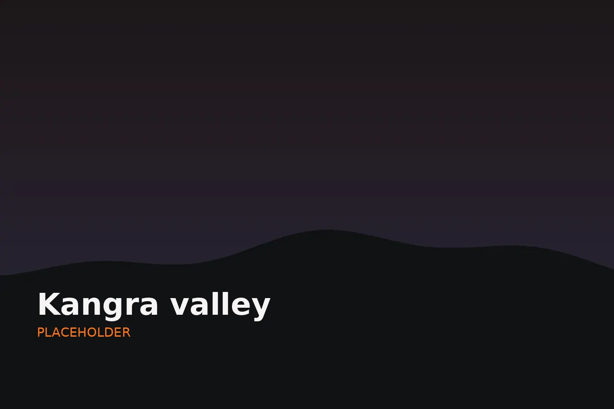
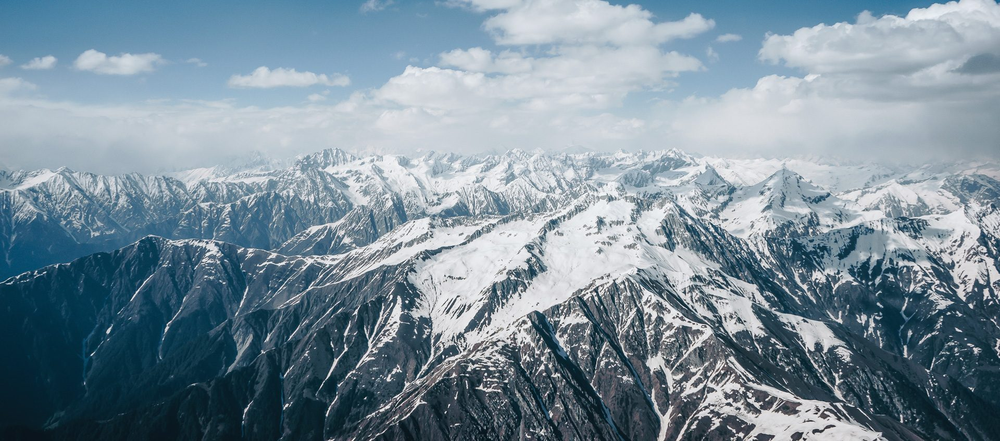

01
印度第1团
至 2027
确定成行6个名额
每位飞行员£1,100
预留名额
从Bir Billing出发的大山飞行


从Billing的草甸起飞，
在Dhauladhar山脉的一个个山包上爬升，再向西飞往达兰萨拉，
然后趁天光渐暗，掉头飞回Bir。
前山山脉上3至3.6 km，
十月至十一月。
我们的喜马拉雅远征带来一种空中体验：你将翱翔于被时间与传说塑造的大地之上，飘过古老的寺院，同时在稀薄的空气中探索自己的极限。这是一段触动心灵的旅程。Bir就是起点：一个位于Billing的起飞场，一片在镇子边上的降落场，还有一道前山山脉，飞行员们从1980年代起就一直沿着它往返飞行。
每个飞行日都从Bir上方Billing的草甸开始。起飞场几乎总是无风，所以来之前要掌握的一项技能，就是不借助风、干净利落地正向起飞，
行程跟着天气条件走，而不是照时间表。在地面上，Bir有一公里长的街道，沿街约有一百家餐馆，还有可以徒步的小径、温泉，以及可以坐下来聆听诵经的寺院。
Eddie Colfox 记得，过去到了十月下旬，空气会变得过于稳定，很难爬升到2,800 m 以上。如今季风会一直拖到十月第一周，空气也一直足够不稳定，直到十一月都能爬升到远超3,000 m 的高度。十一月中旬从Bir出发时，他在前山山脊上到过3,600 m，在深处的后山到过5,800 m。
Eddie Colfox，印度篇秋季才是飞行季。Eddie Colfox 说，如今好的飞行条件大约从10月10日开始，比以前晚，并会一直持续到十一月中后期。住在Bir的 Jigish Gohil 说，几乎所有人都在秋季来，因为那时几乎每天都能稳定飞行。春季也能飞，但条件更强，人也少得多。飞行当天，可以看 Jigish 自己的网站 paraguide.in 为Bir Billing提供的实时气象站。
Jigish Gohil，Bir篇起飞场前方的飞行是教科书式的部分：整条山谷沿线都有降落场，公路总在不远处，兀鹫会标出热气流的位置。如果当天不顺，你就降落，搭回收车回家。
大多数日子都以回到Bir收尾。如果没有，飞行员们的WhatsApp和Telegram群会拼出租车，通常四名飞行员挤一辆小车；早上也是靠同一个网络把大家送上山。
起飞场后面是一道山脊，过了它，一切同时升级：海拔、热气流强度、乱流和寒冷，按 Eddie Colfox 的估算大约都增加三分之一。那是以后的一步，不是第一周该做的事。
2023年秋季，Bir迎来了大约800名外来飞行员，而 Jigish Gohil 刚来时只有大约200名。我们每天早上都会做空中交通简报，并通过对讲机让队伍保持在一起。
我们不把客户当作客户，而是当作朋友和同样怀有梦想的人。他们是和我们一样，把探索新视野放在首位的飞行员。这意味着我们会不放过任何一个热气流，帮助你创造个人最佳成绩，或者只是体验一次终生难忘的飞行
我们知道 Touch The Sky With Glory 是什么感觉，我们的梦想就是能与你分享这份感受

Aninder本人在Bir拍摄的画面，沿Dhauladhar山脉飞行的三秒钟。滚动页面让它前进或后退，不会自动播放任何内容。

从69 km 宽的 Kangra 山谷全景飞入，降到Billing，沿前山山脉向西飞到达兰萨拉，再向东飞回360，然后翻过后山。滚动页面就会飞这条线，你也可以自己操控，想去哪里就去哪里。
一个起飞场，一片降落场，还有一道向两边延伸几十公里都能飞的前山山脉。行程跟着天气条件走，而不是按时间表；下面是这里的飞行日通常的几种走法。
海拔约2,400 m
标准的一天，也是 Eddie Colfox 会推荐给经验较少的飞行员的航线：沿前山山脉向西飞到达兰萨拉再飞回家，一路都有大片可降落的田地，回收也很方便。照他的说法，早在1988年，飞行员们就已经在这条线上往返飞行了。听他讲这条线。
向西，飞出80至90 km 再返回
飞完达兰萨拉之后，他的下一步是回头向东，飞过起飞场到360，然后再回家。同一道前山山脉，同样可选的降落场，只是飞得更多。
向东，更大的一天
Billing后面是一道山脊，过了它就是大山：Barabangal、飞往马纳利的航线，乃至更远。Jigish Gohil 判断能否去的标准是：两百来个小时的飞行经验、一次SIV课程，以及能在野外过夜、长途徒步的装备和体能。他的完整标准。
向北，不是第一周的航线






地面是19 m 精度的开放地形数据（AWS Terrain Tiles、Mapzen Terrarium，来自 SRTM 及其他开放来源），实时绘制成地形起伏，可随滚动飞行，也可手动移动；图钉是飞行员在Bir飞行时使用的航点（Indian XC League），城镇位置取自 GeoNames（CC BY 4.0）。标注“附近”的照片是根据图片说明定位的，而不是根据定位坐标。图中绘制的飞行都是按 XContest 规则计分的真实航迹：距离是计分航线的距离，虚线就是这条航线，平均速度是计分距离除以留空时间。地标照片来自 Wikimedia Commons，每张出现时都注明了作者和许可协议。


沿着前山山脉
Dhauladhar，印度在Bir共四个团期，每期十天九晚，每期六名飞行员。
至 2027
确定成行6个名额
每位飞行员£1,100
预留名额至 2027
确定成行6个名额
每位飞行员£1,100
预留名额至 2027
确定成行6个名额
每位飞行员£1,100
预留名额至 2027
确定成行6个名额
每位飞行员£1,100
预留名额点击“预留名额”即会为该团期发送咨询。四个团期全部保证成行：我们不会因为人数不足取消其中任何一期。预订时需要支付哪些款项，请见我们的预订条款。
谁来带队
Aninder小时候在喜马拉雅山麓第一次体验双人飞行，此后已经飞行了十多年。他于2023年创立了Paragliding Atlas，自己飞过Bir，并主持播客，包括本页内容所依据的两集Bir节目。
Gurpreet 从1993年开始飞行，是第一位持有 BHPA 教练执照的印度人。他于2002年创办了 PG Gurukul 学校，学校现设在Bir，2025年成为印度第一所获得印度航空俱乐部（Aero Club of India）认证的滑翔伞学校。他是第一位登上国际公开级领奖台的印度人，参加过69项国际赛事，并参与起草了印度的滑翔伞安全规则和飞行员等级制度。2026年，FAI授予他 Paul Tissandier 奖状。
每名向导最多带三名飞行员，绝不超过。
[to supply]
Eddie Colfox 从2007年起就在Bir组织飞行之旅。他聊到飞行季如何推移、沿前山山脉的航线，以及一旦翻过后山会有什么变化。
秋季。从2006年起就在Bir飞行的 Eddie Colfox 说，如今好的飞行条件大约从10月10日开始，因为季风常常拖到当月第一周，而空气一直保持足够不稳定，直到进入十一月很久以后都能爬升到3,000 m 以上。我们的秋季两个团期，10月21日至30日和2027年11月3日至12日，都在这个窗口之内；春季两个团期，4月15日至24日和2027年4月25日至5月4日，则在它之前。Eddie 谈飞行季。
IPPI 2级或同等资质，与我们的肯尼亚团相同，而且你应该能够独立飞行：自己起飞、盘热气流、做判断和降落。最重要的是，来之前先练好无风起飞，因为Billing很少有风帮你。在 Eddie Colfox 看来，飞了100到300小时的飞行员在这里仍算新手，他的建议是跟着有经验的团队飞。
大山飞行十天的费用为每位飞行员£1,100，每个团期价格相同，由Aninder Singh和 Gurpreet Dhindsa 带队，每名向导带三名飞行员。费用包括向导服务、每天往返Billing的交通、回收和起飞费。国际航班、签证和保险需你自行安排。四个团期全部保证成行。
先飞到德里，再转国内航班到达兰萨拉（机场名为 Kangra 或 Gaggal），然后坐大约两小时的出租车到Bir。住在Bir的 Jigish Gohil 认为，从德里出发的 Volvo 夜班大巴是最便宜、最省事的选择，座椅可以放得很低，足以睡觉。昌迪加尔和阿姆利则机场也可以，只是最后要多开一段车。
大多数国籍可以在线申请印度电子旅游签证，但并非全部，所以请在官方网站上查询你的国籍。至少在抵达前四天申请；我们第一个团期在4月15日出发，这件事可别拖到最后。自2025年10月起，每位外国旅客还需在登机前72小时内在线免费填写一份电子入境卡（e-Arrival Card）。
你自己的认证伞翼、带背部保护的座袋、备份伞、头盔、垂直速度表或GPS，以及对讲机。带一顶让你能放松飞的伞翼，而不是你手里最激进的那顶：Eddie Colfox 的建议是，带让你感到自在的好装备。山谷里很暖和，云底却冰冷，所以要带上羽绒服，以及你已经在平稳气流里试过的手套。完整清单见下方。
打包前先查清楚。有些卫星通信设备在印度严格来说并不合法，而网上的建议也还没完全更新。Eddie Colfox 仍然把某种发射设备视为必备的安全装备，并且公开这样说，但遵守规定是你自己的事。预订时问问我们你的设备的情况，这样你在出发前就能弄清楚，而不是到了海关才知道。
旅行保险必须涵盖在印度至少4,000 m 高度的滑翔伞运动，包括救援、医疗和遣返。来之前请向你的保险公司确认它在那里确实会赔付，因为来自印度的理赔可能又慢又复杂。在我们与 Jigish Gohil 的那一集节目里，一名有保险的飞行员在距起飞场约15 km 处坠落，仍然等到第二天才等来直升机。
很拥挤。Jigish Gohil 统计，2023年秋季约有800名外来飞行员，而他刚来时约有200名，因为每年这个时候几乎没有别的地方能这样稳定地飞。前山山脉足够宽，可以分散开飞；他的建议是，一旦高度够飞到下一道山脊，就离开主热气流。春季人少一些，大约100名飞行员，但条件更强。
支付定金即可锁定名额，余款在出发前120天付清；晚于这个时间预订的，需在预订时支付全款。如果之后取消，需要支付解约费：即价格减去我们节省的费用，再减去我们转卖你的名额所收回的款项，我们会给你看具体的计算。这就是我们大力推荐行程取消险的原因。详情见预订条款。
我们宁愿你读完这些后认定它不适合你，也不愿你到了之后才发现。
大山飞行专为能独立飞行的飞行员打造：他们想在喜马拉雅最容易上手的地方飞，也乐意为此与别人分享天空。
Bir以“容易的喜马拉雅”著称，在空中，它大体上名副其实。让飞行员栽跟头的，是飞行之外的一切：在无风的起飞场起飞、身后还排着队，挤满伞翼的主热气流，以及进入繁忙降落场的长距离进场。
一天怎么过
天气预报、计划和空中交通：上升气流可能在哪里，往哪个方向飞，以及如果当天条件提前收场该怎么办。
拼出租车上Billing，从Bir出发约45分钟，大家都是这样上去的，通常四名飞行员一辆车。
起飞场几乎总是无风，而且会排队。到旁边去铺伞，伞翼一升起来，就起飞。
一旦高度够飞到下一个山包，就离开主热气流。前山山脉向两边延伸几十公里都能飞，没必要待在人群里。
大多数日子都以回到Bir收尾。早点选好降落场，飞完整的进场航线；在其他任何地方降落，都要留意梯田和电线。
写给自行前往Bir、而不是参加我们行程的飞行员。这些内容都不是我们独有的，无论你跟谁去那里飞，飞之前都值得一读。
Bir的天气是最容易的部分。那里的飞行员谈论的是空中交通，他们讲到的事故也都是空中交通事故。这里的内容大多来自我们自己的两集节目：一集是Eddie Colfox，他从2007年起就在Bir组织飞行之旅；另一集是Jigish Gohil，他在那里住了大约十年。他们的话是转述，不是原话引用。
Bir不是你去摸索自己新买的高端伞翼在下午表现如何的地方。这里的飞行在于长，而不在于难；能享受其中的，是那些不必忙着操控自己滑翔伞的飞行员。
他说，不是最好的装备，而是让你感到安心的好装备：一顶平稳到你飞着它都乐意拍照的伞翼。
每天起飞前，说清楚你要去哪里、和谁一起去。晚上再报一声平安，形成闭环。这里出的大多数问题都能挺过去；真正把它变成一场救援的，是失踪六小时都没人发现。
把当天的计划告诉朋友，能找到伙伴就结伴飞，带上某种追踪设备，晚上降落后告诉大家一声。
这是宣传册不会写的部分。让Bir变得容易的热气流，也正是其他所有人都在飞的热气流，而秋季正是所有人都来的时候。
他第一次来过秋季飞行季时，大约有200名来自世界各地的飞行员在那里飞。到2023年秋季，大约有800名。
从外侧加入，按已有的方向盘旋，并留出空间。Jigish Gohil 讲到的空中相撞，都是因为飞行员转错方向、挤成一团，或者不看自己往哪里飞。
如果盘旋圈小到让你不舒服，就离开去下一道山脊。前山山脉沿线每个山包上都有热气流。
Bir有出色的飞行员，其中有些人做的事你不该模仿。本地飞行员驾驶双排组伞翼飞得通的线路，并不自动就是适合你的线路。
不要以为前面的飞行员知道自己在做什么。在Bir空中飞的飞行员，有的技术一流，有的只是不懂得更好的做法。
Bir的秋季可能出现对流过度发展。2024年10月17日，一名外来飞行员在一次长距离飞行接近尾声时，在大约十分钟内被卷进雷暴云，从3,000 m 卷到7,000 m 以上，最终幸存；当天这一地区报告了九起事件，其中三起抛了备份伞。《Cross Country》杂志做了报道。
留意云发展得有多快，远离大云的下方，宁可早降落，不要晚降落。
对云要非常小心。在条件强的日子，他宁愿向南飞出去、远离山区，也不愿待在大云下面一个可能被困住的山谷系统里。
Bir的降落场很大、长满草，而且很繁忙，这正是人们会在那里受伤的原因。在其他任何地方外场降落，主要危险就变成了梯田和电线，它们往往很晚才看得见：一直观察，直到双脚落地。
不管场地多大，飞行员还是会误判最后一边，进场过长，然后在三四米高处让伞翼失速砸下去，摔断点什么。
前山山脉后面，地形变得巨大，选择却变得很少。海拔、热气流强度、乱流和寒冷同时升级，救援可能要到第二天才能赶到。
他判断能否翻过后山的标准：两百来个小时的飞行经验、一次SIV课程、能在野外过夜的装备，以及能走八九个小时的体能。跟已经飞过的人一起去。
有些卫星通信设备在印度严格来说并不合法，而网上的建议也还没完全更新。购买或打包之前先问我们。别等到了海关才发现。
他飞行时总是尽量在备份伞之外再带上某种发射设备，并坦言其中有些在印度严格来说并不合法。
新德里
Bir在北边，坐一晚夜班大巴可达，或者短途飞到达兰萨拉，再走大约两小时公路。
超过14亿
世界上人口最多的国家。面积约330万平方公里。
印度卢比
INR。Bir只有一两台 ATM，周末还可能被取空，所以来的时候带上小面额现金，用来付出租车、印度奶茶，以及外场降落后的回程车费。
印地语和英语
Bir一带普遍说英语，几十年来这里一直欢迎外来飞行员。
出行前申请
大多数国籍可以使用电子签证，需在抵达前至少4天申请。所有人还需在飞抵前72小时内在线免费填写一份电子入境卡（e-Arrival Card）。
230伏，50赫兹
插头类型为 C、D 和 M 型。请带转换插头。
山谷里暖和，云底冰冷，还有当天无法补救的证件手续。其中六项标为必备。没有它们不要出发。
Billing的起飞场海拔约2,400 m，飞行季的云底超过3,000 m，那里冰冷。
前山山脉很宽容；空中交通可不。带上能让你放松飞的装备。
在后山外场降落，救援可能要到第二天才到。带上在野外过夜所需的东西。
在印度，先办手续，后飞行。这些事都没法在你需要它的当天早上搞定。
山谷里暖和，到4,000 m 就真冷了。两者都在同一天，天天如此。
Billing海拔约2,400 m，云底远超3,000 m。带上你信得过的装备。
一些小东西，主要用于你降落在计划之外地点的那天。
在这方面，喜马偕尔邦是印度比较温和的地区之一，但这里的食物对你的肠胃来说仍然是新的。
勾选状态保存在这台设备上，所以你可以在出发前一晚回来查看。这里的任何内容都不会发送到任何地方。
准备好Touch The Sky With Glory了吗？
无论你是飞行10小时、正向第一个50小时迈进的飞行员，还是追逐下一项世界纪录的天空老手，我们专注于把你的雄心变成飞行时间。这次轻松、不设任何预期的初步通话，用坦诚的交流帮你理清种种未知。
我们会为你详细讲解：